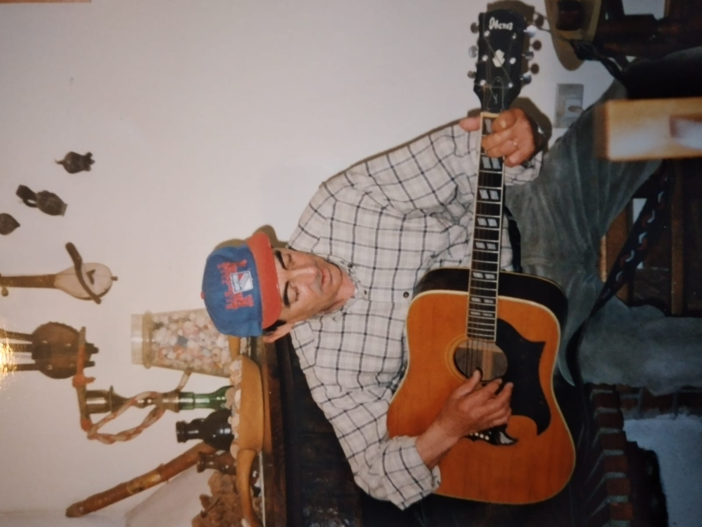

ECCOMI

FOTO DI DANILO BUSSONI
UBUNTU
“Ubuntu [...] speaks of the very essence of being human. [We] say [...] "Hey,
so-and-so has ubuntu." Then you are generous, you are hospitable, you are
friendly and caring and compassionate. You share what you have. It is to say,
"My humanity is caught up, is inextricably bound up, in yours." We belong in a
bundle of life. We say, "A person is a person through other persons.”
Desmond Tutu
Considero la mia vita un Dono, opportunita’ unica, irripetibile.
"So di non sapere”, ma scelgo di affidarmi. Scelgo di considerare il tempo che
ho a disposizione come un mistero, ma anche come una grande ricchezza.
Essere consapevole che la Vita è un dono mi incoraggia a vivere con
gratitudine.
Ricevere un Dono implica la consapevolezza e la responsabilita’ della
condivisione.
Come dice
Desmond Tutu nell'UBUNTU,
IO SONO PERCHE’ NOI SIAMO. Tutto è
in relazione.

LA STORIA CHE LE CONTIENE TUTTE
“Ogni istante di vita è un miracolo. Io ci sono, potrei non esserci… Odissea… viaggio. Il seme viene depositato nel grembo, in milioni si muovono, come una marea, come un torrente che corre verso l’acqua madre, essi avanzano ostacolo dopo ostacolo. Agitando il loro flagelli si dirigono verso la meta, affrontando un ambiente che li ostacola, sottoposti a dure prove. L’ambiente è ostile, potenti correnti frenano la navigazione, il passaggio in un tunnel ostacola l’avanzata… Moriranno tutti, tutti tranne uno. L’incontenibile forza della vita spinge in avanti, ed eccolo l’astro misterioso, grandissimo, potente, bello come il sole alla fine del tunnel, dove la moltitudine si è già persa per la fatica immensa. Uno solo entrerà, uno solo si fonderà. Raramente piu’ di uno, ed il mistero si fa ancora piu’ grande. Sono passati tanti anni, ma quella infinitamente piccola parte di me portava con sé il mio segreto, il mio profondo sé.Ultima agitazione, possibilità, sforzo, passione, e l’altra parte di me mi lascia entrare. Appena entra, la corazza diventa invalicabile, per tutti gli altri è finita. Il vincitore libera il patrimonio scritto nei suoi geni, si fonde, ovulo e spermatozoo diventano UNO… da questa unione nasce un’unica cellula. Eccomi, fra milioni di possibilità io sono qui. Ho vinto la mia corsa, io. Sono morti tutti, tranne uno. La lotteria della vita. Da ora in poi tutto è già scritto, il processo si accelera, comincia la divisione, la duplicazione… E comincia il tamtam della vita attraverso il cuore. Stupore… da una cellula si generano miliardi di cellule, processi di altissima definizione suddividono, specializzano, e ogni cellula è al suo posto. Dicono che quando il seme incontra l’ovulo si sprigionino scintille di luce. La mia storia è questa. La storia di te che leggi è questa. Tutte le volte che perderai qualcosa, che arriverai ultimo o non fra i primi, tutte le volte che altri saranno prima di te e ti sentirai senza valore, non dimenticare… Eccomi, fra milioni di possibilità io sono qui. Ho vinto la mia corsa, io. Alla lotteria della vita sono stato vincitore, forse l’unica vera battaglia che nella vita vale la pena di vincere. “
MONICA
(da “Una Collana di Perle dal SudAfrica” Ed.Albatros di Gozzini Turelli Monica Franca)

GRAZIE PAPA'
Ciao papà
Siamo qui tutti insieme per salutarti e per dirti GRAZIE.
GRAZIE per averci insegnato fin da bambini che la felicita' non centra niente con i soldi. La felicità che ci hai insegnato tu con il tuo esempio, non con le parole, è dentro di noi, ed e' fuori nelle "piccole cose". Felicità è andare nel bosco in autunno a raccogliere i funghi, le castagne.
Felicita' è andare a fare la legna perche' il fuoco del camino acceso, fa famiglia, non porta solo calore, è una medicina per l'anima.
La felicità e'nei frutti della Terra. L'orto è stata la tua grande nursery, hai fatto germogliare e curato con amore frutti prelibati, sempre con la schiena china... ricordo quando raccoglievi i pomodori, li mettevi in un cestino di paglia, sistemati con grazia. Li portavi in casa e ti brillavano gli occhi.
Che dono papa' la tua verdura, che sfarzo di colori, insalate, noci, i fichi raccolti... Che maestria, che senso dell'onore, e quanta dolcezza e saggezza in questi gesti pieni d'amore!
Siamo stati felici di cantare tutti insieme mentre tu suonavi la chitarra o l'armonica. Felicita' erano le nostre voci che a diverse altezze diventavano una voce sola, la canzone era il risultato del nostro "lavoro in team" e ci faceva commuovere per la gioia e per il senso profondo di appartenenza e di condivisione.
Felicita' era vederti ballare con la mamma alle sagre del paese, Ci insegnavate cosa è la complicita' in amore, due che diventavano uno nel tango, nei valzer, figure piene di eleganza.
Felicita' era sentire i tuoi racconti, immaginare e assaporare il cielo e la terra del deserto attraverso le tue parole, era l'amore per i viaggi, per la scoperta, l'amore per tutti i paesaggi di madre terra.
Grazie papà per avere amato i nostri figli e per essere stato un Nonno eccezionale con il bastone e con il cappello.
Un Nonno di pochi baci ma che ti avvolge con lo sguardo e ti fa sentire al sicuro, un Nonno di quelli che ti insegnano una saggezza antica che porterai sempre con te e che costituisce Il ponte tra il passato e il futuro. Un Nonno che costruisce le casette sugli alberi e che raccoglie fiori nel prato.
Nonno Luigi...
Grazie papà per non avere mai perso la tua voglia di ridere o di fare una battuta anche nel momento della sofferenza, perché ci ha insegnato che la felicità è da trovare in qualsiasi momento, anche in quelli piu' difficili.
In questi ultimi anni dove la malattia ti ha portato via tutta l'autonomia e la possibilita' di vivere le tue passioni, sei sempre stato capace di essere felice per le piccole cose: un pasto buono, una bella canzone da ascoltare alla radio, i nipoti, le persone che venivano a trovarti.
Hai avuto un sorriso per tutti, un sorriso vero non di circostanza e una battuta di spirito, come un cuore bambino che portava leggerezza intorno a se'.
Grazie a tutti coloro che hanno curato il papa' nella malattia, ai miei fratelli, ma sopratutto un Grazie grandissimo a te mamma, per tutto quello che hai fatto per lui, per averlo tenuto in vita con le tue amorose cure.
Qualcuno ha chiamato tutto questo "sacrificio". Ma tu mamma ci hai insegnato che l'amore non è mai sacrificio.
Puo' essere una fatica immensa, e' notti insonni, e a volte purtroppo è una sofferenza grande, ma l'unico vero sacrificio e' perdere le persone che amiamo. Grazie alla nostra sorella Manuela per tutto l'aiuto che ha dato al nostro papà e alla nostra mamma, senza mai fermarsi.
Papa', sei riuscito a farci innamorare tutti.
Non so dove sei ora, ma so dove resterai,
per sempre...
qui con me.
Grazie
Monica

-1.png)